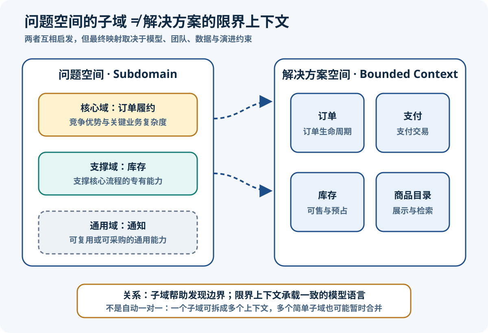
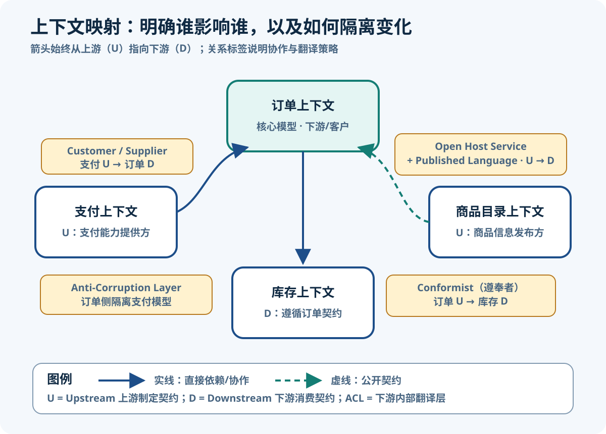

DDD 战略设计与限界上下文
整理日期：2026-08-11；资料检索日期：2026-08-11
目标：先在问题空间识别业务重心，再在解决方案中划清模型边界，并明确各边界如何协作。
核心结论
- 战略设计回答“哪套模型在什么范围有效，以及边界之间如何协作”，不是先决定包、数据库或微服务数量。
- 子域是问题空间中的业务能力或问题区域；限界上下文是解决方案中一套模型和统一语言的明确适用边界。二者相关，但不自动一一对应。
- 团队、代码库、部署单元和数据库边界经常与限界上下文对齐，以降低认知与变更耦合；它们是实现选择和边界证据，不是限界上下文的定义。
- 上下文映射不仅画“谁调用谁”，还要记录影响方向、协作治理、共享范围与翻译策略。
- 同一个业务词可以在不同上下文中拥有不同且合理的含义；强行建立全企业唯一模型，常把局部变化扩散成全局耦合。
来源定义：Eric Evans 的 DDD Reference将 Bounded Context 与 Context Map 放在战略设计模式中；Martin Fowler 的 Bounded Context 说明强调在各自边界内保持模型一致并显式描述关系。Java 工程翻译：模块、API 和适配器可以承载这些决定，但不能反过来代替业务建模。
子域分类
直观地说，战略设计先问“哪些业务能力创造差异，哪些只是让核心业务运转，哪些已有成熟通用解法”。分类的目的不是给系统贴永久标签，而是决定稀缺的领域专家时间、建模深度和工程投入应放在哪里。
| 子域类别 | 判断重点 | 投资策略 | 电商示例 | 主要风险 |
|---|---|---|---|---|
| Core Domain（核心域） | 直接承载当前竞争优势或关键战略，规则复杂且持续变化 | 投入优秀团队与领域专家，反复提炼模型，避免被通用方案限制 | 通过承诺库存、拆单与履约策略形成差异化的订单履约 | 把所有“重要功能”都叫核心，导致资源失焦 |
| Supporting Subdomain（支撑子域） | 业务运转所需，通常带有组织特有规则，但不直接形成差异化 | 保持合适的定制与清晰边界，工程质量够用且可演进 | 库存盘点、库位与补货操作支持履约，但竞争点不在仓库台账本身 | 当成通用 CRUD 后低估专有规则，或投入超过其战略价值 |
| Generic Subdomain（通用子域） | 行业已有成熟解法，自己的特殊知识价值有限 | 优先采购、复用标准服务或采用成熟组件，把翻译与替换边界留好 | 短信、邮件和推送通知 | 重复造轮子，或让供应商模型泄漏进核心域 |
来源定义：Microsoft Learn 的领域分析指南用竞争优势、业务运转与行业通用解法区分三类子域；Evans 的 DDD Reference PDF要求提炼并集中投资于小而有价值的核心。情境建议：“订单履约是核心、库存是支撑、通知是通用”只适用于本例。若企业靠库存调度算法竞争，库存可能上升为核心；战略或市场变化后分类也应复核。
限界上下文
来源定义：限界上下文明确规定一套模型在哪里被定义和适用。边界内，术语、规则和代码表达应保持一致；跨出边界，同名概念可以拥有另一套属性、生命周期与约束。比如订单上下文的“商品”是下单时锁定的名称和成交价快照，商品目录上下文的“商品”则关心分类、展示素材与搜索属性。二者映射的是同一现实商品，却不是同一个模型对象。
边界通常在语言转义、业务不变量、数据责任或变化原因发生明显改变时出现。试图让订单、目录、仓储和财务共用一个企业级 Product，会积累大量可空字段、条件分支与跨团队发布协调。Fowler 指出，大型领域维持一个统一模型通常既不可行也不经济；合理目标是在每个显式边界内保持一致，并让边界间翻译可见。

图可用文字等价表达为：问题空间把业务分析为订单履约、库存和通知等子域；解决方案空间则建立订单、支付、库存、商品目录等模型边界。子域会启发上下文边界，却没有自动的一对一规则：一个复杂子域可能拆成多个上下文，例如订单履约拆成订单、支付协调与配送；多个简单且变化一致的子域也可能暂时由一个上下文承载。只有发现模型含义、规则和演进压力后，才能决定映射。
边界提醒：一个限界上下文可以先在模块化单体内实现，也可能后来拆成多个部署组件；一个微服务若跨越多套相互冲突的模型，仍然没有解决边界问题。数据库独立、团队独立或网络调用也不能单独证明存在限界上下文。
识别边界
识别不是按组织架构机械切割，而是收集多种业务证据，提出候选边界，再用真实场景验证。部署拓扑可以提示现状约束，但模型与语言才是判断核心。
| 证据 | 要问的问题 | 边界信号 | 电商例子 | 避免误判 |
|---|---|---|---|---|
| 语言变化 | 同一词在不同参与者口中是否指不同事物？ | 定义、动作或状态语义分叉 | 目录“上架”是可展示，库存“上架”是货物进入库位 | 只有叫法不同但规则完全一致，未必需要拆分 |
| 不变量 | 哪些规则必须同步成立？由谁守护？ | 一致性要求形成内聚簇 | 订单提交要求至少一行；库存预占由库存规则决定 | 不要把所有关联数据都塞进一个事务 |
| 数据所有权 | 谁有权解释和改变这份事实？ | 写入权与权威含义不同 | 目录拥有展示名称，订单拥有成交快照 | 共享数据库现状是约束，不是共享模型证明 |
| 变化节奏 | 哪些规则因不同原因、按不同频率变化？ | 独立演进能减少连锁回归 | 促销定价频繁变化，财务入账遵循稳定审计规则 | 发布频率不同只是证据之一 |
| 外部依赖 | 供应商或遗留系统的模型会不会侵入内部？ | 需要翻译或保护模型 | 第三方支付状态不等于订单支付状态 | 不要把每个 HTTP 客户端都叫 ACL |
| 团队认知 | 一个团队能否持续理解并统一该模型？ | 知识与沟通网络出现自然分区 | 目录运营与仓配专家关注不同决策 | 组织边界可调整，不能直接充当定义 |
| 流程交接 | 何时从一种业务承诺转为另一种？ | 明确事件、契约和责任移交 | 订单提交后，请求库存预占 | 流程步骤不同不必每步一个上下文 |
实践建议：选一个端到端场景，把参与者说出的名词、命令、事件、不变量和权威数据标在白板上；先圈出含义稳定的区域，再标出翻译点。最后用失败场景检验：若上游改字段、团队重组或部署合并，候选边界内的业务含义是否仍自洽？
上下文映射
Context Map 是现状地图：命名各限界上下文，标出接触点、共享内容、翻译机制与影响力。它不是调用链图。Context Mapper 官方上下文映射文档明确规定：有向关系中的箭头从 Upstream（上游）指向 Downstream（下游），表达上游模型或契约对下游的影响方向；它不保证 HTTP 请求、事件数据或资金也沿箭头方向流动。
| 模式 | 方向与治理 | 何时有用 | 耦合与风险 | 电商示例 |
|---|---|---|---|---|
| Partnership（合作伙伴） | 对称关系；双方共同规划接口与发布，成败相互牵连 | 关键能力必须同批交付，双方都愿意高频协作 | 计划耦合高；任一方延迟都可能阻塞整体 | 订单与新履约编排共同试运行一项不可分割能力 |
| Shared Kernel（共享内核） | 对称且共同治理；只共享明确、很小的一部分模型与代码 | 翻译成本高于共同维护成本，团队关系紧密 | 变更需双方协商；范围膨胀会重新制造大模型，不能退化成共享工具包 | 订单与结算共同维护极小的货币代码模型 |
| Customer / Supplier（客户/供应商） | U → D；下游客户的优先级进入上游供应商计划 | 下游有谈判能力，上游愿意承诺所需契约 | 规划与验收耦合；权责不清会变成口头承诺 | 支付 U 为订单 D 承诺支付能力和兼容窗口 |
| Conformist（遵奉者） | U → D；下游主动接受上游模型，不建设翻译模型 | 下游影响力很小，且翻译收益低于成本 | 下游语言受限、上游变更会外溢；但这是可审计的理性选择，不天然“坏” | 简单库存消费者直接遵循稳定的订单事件契约 |
| Anti-Corruption Layer（防腐层） | U → D；由下游用自己的语言包装并翻译上游能力 | 上游模型不合适、遗留或变化频繁，而下游模型值得保护 | 翻译与故障处理有成本；若只改字段名而不隔离语义，形成伪 ACL | 订单把目录的“可展示商品”翻译成“可下单商品快照” |
| Open Host Service（开放主机服务） | 上游角色；提供供多个下游使用的一致访问协议 | 上游有很多消费者，逐个定制适配成本过高 | 公共协议演进与兼容成本上升；不要暴露内部模型 | 商品目录提供稳定的查询服务给订单、搜索和营销 |
| Published Language（发布语言） | 通常由上游发布、双方用于交换的文档化语言或格式 | 需要让不同模型通过稳定、可理解的中间语言沟通 | 契约版本与语义治理成本；不要把内部对象直接冻结为公共格式 | 目录发布版本化的商品 JSON Schema 与语义说明 |
来源定义与边界：Evans 的 DDD Reference 将 Partnership 定义为双方共同成败的协作，将 Shared Kernel 限定为小而共同治理的模型子集，并区分下游的 Conformist/ACL 与上游的 OHS/PL。Context Mapper 官方语义规则进一步校验了角色方向：ACL 与 Conformist 是替代性的下游选择，OHS 与 Published Language 是上游角色。OHS 定义“怎样以服务协议开放能力”，Published Language 定义“交换信息用哪套文档化语言”；二者常组合，却不是同一个模式。

图可用文字等价表达为：支付是上游供应商，订单作为下游客户消费支付能力，并在订单侧用 ACL 隔离支付模型；商品目录是上游，通过 OHS 与 Published Language 向下游订单开放商品信息；订单又是库存的上游，库存选择遵循订单契约。实线或虚线展示交互方式，箭头只说明模型影响由 U 指向 D，不应据此推断请求、响应或事件一定同向。
模式组合审查：图中的 Payment Customer/Supplier + Order ACL 可表达一种现实过渡状态：下游能参与上游计划，但双方模型仍需翻译。不过，Context Mapper 按原始模式语义会对 Customer/Supplier + ACL 给出软警告，因为充分合作时下游通常无需防御。若 Order 能影响 Payment 并共同验收契约，应优先简化为 Customer/Supplier；若 Order 实际没有影响力而必须保护自身模型，应更准确地画成普通 U/D + ACL。地图要记录真实治理关系，不能为了凑模式而叠加标签。
订单案例
四个上下文与权威模型
| 上下文 | 拥有的业务含义 | 不拥有的含义 | 对外协作 |
|---|---|---|---|
| Order | 订单草稿、订单行、成交价快照、提交规则 | 商品展示详情、真实可售量、支付清算状态 | 消费目录与支付契约；发布订单事实 |
| Product Catalog | 商品展示、分类、可发布状态和目录价格 | 订单成交承诺与库存预占 | 用 OHS + Published Language 提供目录能力 |
| Payment | 支付尝试、渠道状态、授权与退款 | 订单是否可以提交 | 作为供应商向订单提供支付能力 |
| Inventory | 可售量、预占、释放与仓储规则 | 订单行价格和目录展示 | 消费订单集成消息并作出库存决策 |
从目录到订单再到下游
- Order 需要商品信息时，调用 Product Catalog 的开放服务；目录发布语言里可能叫
listedPrice与displayName。 - Order 下游的 ACL 检验商品是否可下单，并翻译为订单语言里的商品标识、下单名称和单位价格快照。ACL 保护的是订单模型和决策，不只是机械复制 DTO 字段。
Order.create只建立 Draft；聚合验证非空、金额/币种等不变量并成功进入 Submitted 后，才在自己的边界内记录内部OrderSubmitted。- 应用层保存聚合并拉取事件；集成适配器将其不可变快照映射为
OrderSubmittedV1（订单 ID、发生时间、总额/币种、商品与数量），与业务状态同事务写入 Outbox。 - 事务提交后 relay 以至少一次语义向 Payment、Inventory 等下游投递；消费者按消息 ID 幂等。聚合不发送网络消息，rehydrate 也不补发历史事件。
关键区别：OrderSubmitted服务于 Order 上下文内部模型；OrderSubmittedV1服务于上下文之间的版本化契约。二者来源于同一次成功提交，但不是同一对象，也有不同字段、生命周期和兼容责任。把领域事件对象直接序列化到消息总线，会把内部演进权交给所有消费者。
Java 工程映射
下面是可选的工程翻译，不是 DDD 定义。一个限界上下文可以对应 Maven module、Java module 或受架构测试约束的 package；公共 API/事件承载 Published Language；调用上游的端口和适配器可实现 ACL。团队和部署可以与模型边界对齐，但没有“一上下文一微服务一数据库”的强制公式。
| 战略决定 | 可能的 Java 产物 | 应保护的规则 | 不是 |
|---|---|---|---|
| Order 限界上下文 | com.example.order module 及其对外端口 | 外部代码不能绕过订单语言修改内部模型 | 包名本身不是边界 |
| 目录 Published Language | 版本化 OpenAPI/JSON Schema 和兼容测试 | 公开语义与版本策略独立于目录内部对象 | 共享内部实体 JAR |
| Order 侧 ACL | 领域端口、外部客户端与翻译适配器 | 用订单语言表达上游能力、失败和约束 | 只有 DTO-to-DTO 字段映射 |
| 上下游关系 | 契约测试、发布策略、责任人和变更流程 | 治理权与兼容承诺可见 | 仅一条依赖箭头 |
聚焦 ACL 适配器示例（Java 21）
import java.math.BigDecimal;
import java.util.Currency;
import java.util.Objects;
record OrderProductId(String value) {
OrderProductId {
if (value == null || value.isBlank()) {
throw new IllegalArgumentException("订单商品标识不能为空");
}
}
}
// Order 上下文自己的语言：可加入订单的商品快照。
record OrderableProduct(
OrderProductId id,
String orderingName,
BigDecimal unitPrice,
Currency currency) {}
interface ProductCatalogPort {
OrderableProduct loadOrderable(OrderProductId id);
}
// Product Catalog 发布语言中的 DTO，不进入 Order 领域模型。
record CatalogProductPayload(
String sku,
String displayName,
String listedPrice,
String currencyCode,
boolean sellable) {}
interface CatalogPublishedApi {
CatalogProductPayload getProduct(String sku);
}
final class CatalogAclAdapter implements ProductCatalogPort {
private final CatalogPublishedApi catalogApi;
CatalogAclAdapter(CatalogPublishedApi catalogApi) {
this.catalogApi = Objects.requireNonNull(catalogApi);
}
@Override
public OrderableProduct loadOrderable(OrderProductId id) {
var payload = catalogApi.getProduct(id.value());
if (!payload.sellable()) {
throw new IllegalStateException("商品当前不可下单：" + id.value());
}
return new OrderableProduct(
id,
payload.displayName().strip(),
new BigDecimal(payload.listedPrice()),
Currency.getInstance(payload.currencyCode()));
}
}工程解释：ProductCatalogPort用 Order 的语言描述所需能力，CatalogPublishedApi表示上游公共契约，CatalogAclAdapter处理可下单语义、失败与数据转换。实际系统还应在适配器边界处理超时、重试与观测；这些技术职责不改变 ACL 的战略目的——阻止外部模型支配内部模型。
决策练习
工作坊输入：“运营上架商品；客户提交订单后，仓库预占库存；支付渠道把 SUCCESS 回调给平台；缺货时订单仍可保留十分钟；短信供应商可替换。”
- 圈问题空间：先标出商品经营、订单承诺、库存预占、支付处理与通知，不讨论微服务。
- 找语言分叉：询问“上架”“成功”“保留”分别由谁定义；记录同词在不同场景的反例。
- 找不变量和权威事实：订单提交规则由 Order 拥有，真实预占由 Inventory 拥有，渠道成功由 Payment 翻译后才能成为内部支付状态。
- 提出候选上下文：Order、Product Catalog、Inventory、Payment、Notification；写清每个上下文拥有与不拥有的概念。
- 标 U/D 与关系：Payment U → Order D 可采用 Customer/Supplier + Order ACL；Catalog U → Order D 可采用 OHS + PL + Order ACL；Order U → Inventory D 根据影响力选择 Conformist 或协商式关系。
- 补非代码治理：写出契约负责人、版本兼容期、验收测试归属与故障降级规则。
期望输出：一张包含五个命名上下文的现状图；每条有向关系标注 U/D、模式、公共契约和翻译责任；旁边附一张子域分类表，并明确“支付成功”“订单已支付”不是同一个模型事实。
自检：箭头是否从 U 指向 D，而不是照抄请求方向？子域是否被错误写成微服务？Shared Kernel 是否确实小且有共同治理？Conformist 是否基于成本收益主动选择？ACL 是否保护语义而非只换字段名？OHS 与 Published Language 是否分别说明协议和交换语言？如果部署合并，模型边界是否仍能解释业务？
本篇小结
战略设计从业务价值与语言差异出发：用子域决定投资重点，用限界上下文规定模型有效范围，再用上下文映射公开影响力、治理与翻译。完成本篇后，不应再把子域、团队、数据库、微服务和限界上下文画成自动一一对应。下一步进入战术设计篇，在 Order 上下文内部用实体、值对象、聚合和事件守住具体业务规则。
参考资料
资料检索于 2026-08-11。以下均为作者原站或官方技术资料，正文为自行归纳。
- Eric Evans / Domain Language：DDD Reference — DDD 原著定义与模式摘要的官方入口。
- Eric Evans：Domain-Driven Design Reference（PDF） — Bounded Context、Context Map、关系模式与核心域的原始摘要。
- Martin Fowler：Bounded Context — 大模型拆分、同名概念多义与显式上下文关系。
- Microsoft Learn：Use domain analysis to model microservices — 子域分类、模型边界和 ACL 的工程分析流程。
- Context Mapper：Context Map — 上下游箭头、对称/非对称关系与角色的官方语义。
- Context Mapper：Language Semantics — OHS/PL 与 ACL/Conformist 的方向及组合约束。
- Context Mapper：Shared Kernel — 共享内核作为对称、共同维护关系的官方说明。
DDD 七篇专题导航
- DDD 架构总览与学习路线
- DDD 基础概念与统一语言
- DDD 战略设计与限界上下文（本篇）
- DDD 战术设计与领域模型
- DDD 分层架构模式对比
- DDD 订单领域 Java 实践
- DDD 落地演进与常见误区